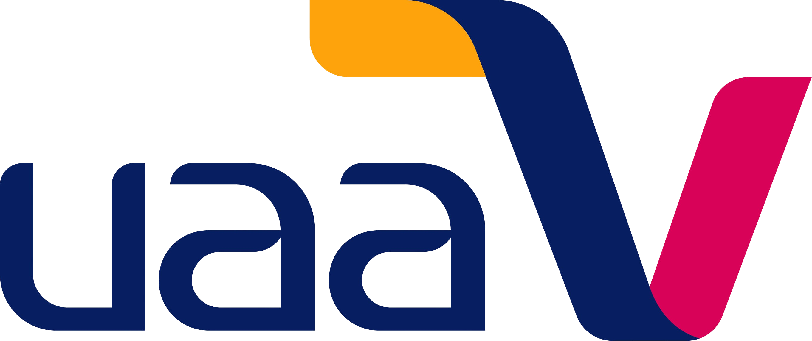
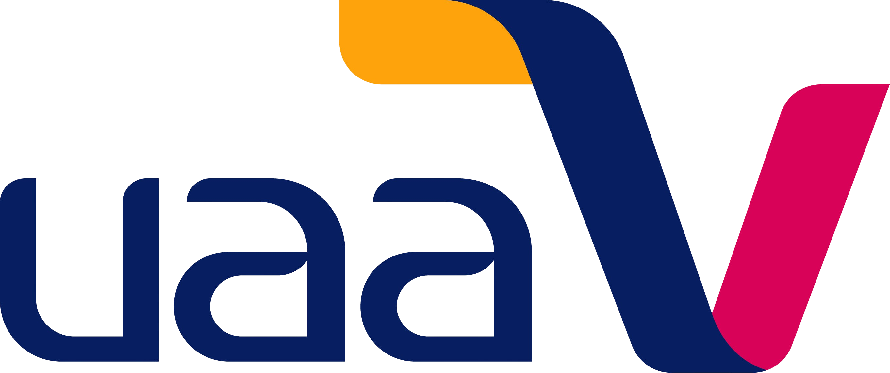

Radio UAA nace el 13 de enero de 1978 con la premisa fundamental de ser un vínculo entre la Institución y la sociedad en general, de manera especial con la comunidad de nuestra Máxima Casa de Estudios, transmitiendo la cultura en sus diversas manifestaciones, el conocimiento, los valores y el quehacer universitario con plena responsabilidad social.
El 19 de junio del 2006 la emisora incursiona en la Frecuencia Modulada, transmitiendo en los 94.5 MHz, y a todo el mundo por Internet a través de la página radio.uaa.mx, así como en las aplicaciones TuneIn y Radio Garden las 24 horas, los 365 días del año y en el año 2023 se pone a disposición de todo publico sus producciones en las plataformas de podcast más populares: Spotify, Apple Podcast, Google Podcast y Amazon Music
Radio UAA cuenta con una variada programación musical para todos los gustos, ya sean propuestas dentro del Jazz, Rock, New Age, Reggae, Electrónica, así como música Tradicional de diversas partes del mundo.
Dos son los espacios informativos transmitidos a través de Radio UAA: “UAA Noticias” en colaboración con nuestro canal de Televisión Universitaria «UAA TV», así como la retransmisión del noticiario de Radio Educación «Pulso de la noche”, el cual complementa nuestra barra de información.
En análisis y debate de temas de interés, destaca el programa “Prospectiva 94.5”, donde de la mano de lso especialistas se analizan los temas en tendencia de forma imparcial y desde la visión académica de la UAA ; en contenido histórico, “La Terca Memoria”, así como “Panorama Universitario”, espacio dedicado a difundir producciones radiofónicas de diferentes Radios Universitarias de México
Dentro de la barra de difusión del quehacer en los Centros Académicos y Direcciones Generales contamos con producciones como “Hoy Filosofía”, “El Gis”, “ADN de la Salud”, “Altavoz”, “Hablemos de Trabajo Social” y “Proiectus”
La Extensión Universitaria se difunde a través de nuestras nuevas producciones, como «Contra Rutina», programa del Departamento de Difusión Cultural donde la comunidad universitaria está al día de todas las actividades culturales de nuestra institución: Helikón, Museo de la Muerte, Polifonía Universitaria, Muestras de Cine, etc.
También destaca la participación de productores externos de otras instituciones de Educación Superior como el Instituto Tecnológico de Aguascalientes y la Universidad Pedagógica Nacional; así como de dependencias gubernamentales y municipales, entre ellas el IMAC e ICA quienes completan el vínculo entre la Universidad y Sociedad.
Finalmente, Radio UAA se integra a “La Red” de radiodifusoras y televisoras educativas y culturales de México, con la que colabora desde 2014 y en el año 2015 forma parte de los miembros fundadores de la RRUM (Red de Radiodifusoras Universitarias de México) participando así de manera activa en la difusión de la cultura y la transmisión del conocimiento.